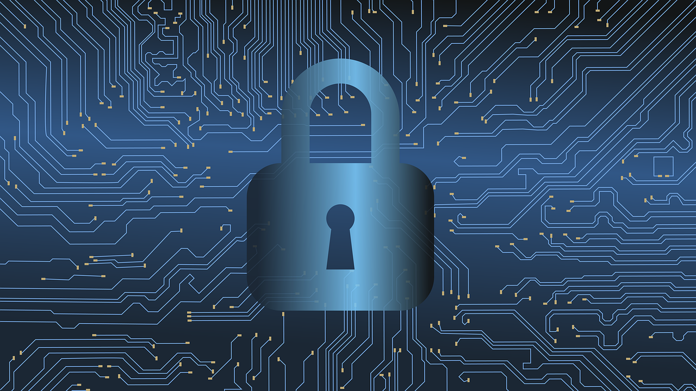

Cybersecurity is the technology and process that is designed to protect networks and devices from attacks, damage, or unauthorized access. Cybersecurity is essential for a country’s military, hospitals, large corporations, small businesses, and other organizations and individuals since data is now the cornerstone of any organization.
Organizations transmit sensitive data across networks and to other devices in the course of doing businesses, and cyber security describes the discipline dedicated to protecting that information and the systems used to process or store it.
Use Better Passwords and use multifactor authentication
Cyberthieves have developed powerful algorithms that can correctly guess difficult passwords in seconds. Traditional password advice suggested using a long password of 12 characters at minimum with a mix of numbers, symbols and capital and lower-case letters. It's also advised to use a password manager to ensure you do not reuse passwords between sites
Use a safe and secure network
It might be a no-brainer for a company to have a secured, encrypted and hidden WiFi network, but with the advent of remote working, it’s important that you also have safely encrypted your own personal networks
Updating Software
Microsoft releases a new Windows update every 1-2 weeks with the latest patches. If there is a larger exploit that is critical then an update will be out within a day or two. It is always good to update your system once a new update is released.
Be safe rather than sorry
Email look suspicious? Pop-up offering you a good deal? Don't click on it! The ABC’s of cybersecurity are Always Be Cautious. If an email seems remotely off, or asks you to download something, be cautious or don't download or click the link
Always back up for data
Your data can be easily lost in a security breach or if a fire happens. Always have a backup of your information offsite and in a secure location